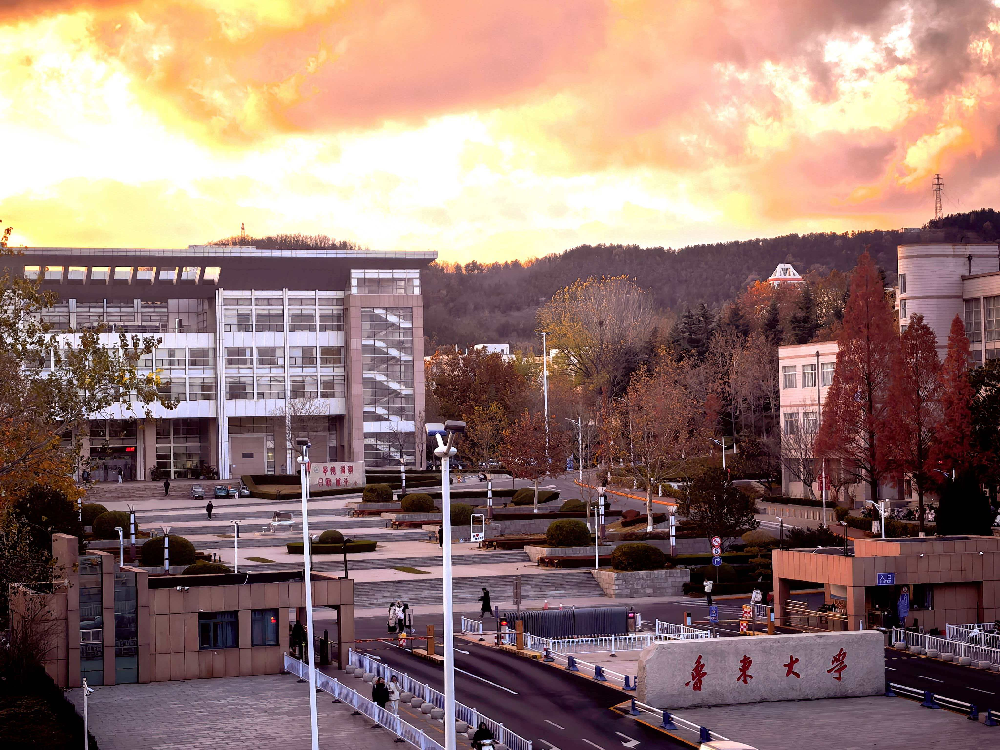
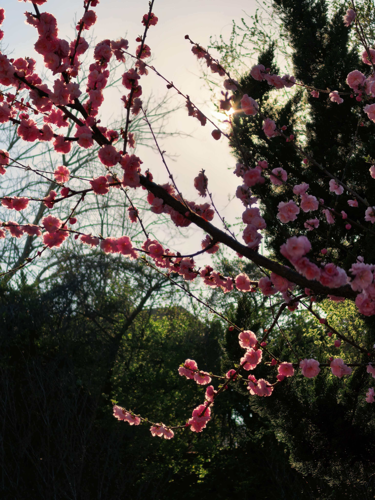
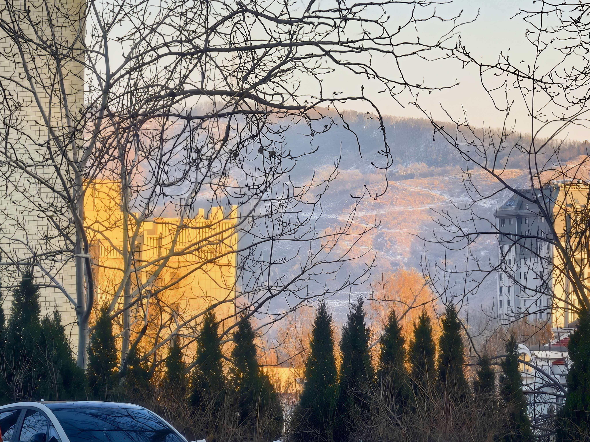

秋意渐浓，鲁东大学的校园被一层温柔的金色轻轻笼罩。道路两旁的梧桐叶渐渐染上橙黄，风一吹，便如蝴蝶般悠悠飘落，铺成一条温暖的小径。阳光穿过枝叶的缝隙，在地面洒下斑驳的光影，走在其中，仿佛置身于一幅安静而诗意的画卷。湖边的垂柳依旧轻垂，只是叶色多了几分沉稳，湖水清澈，倒映着蓝天与树影，偶尔有小鱼跃出水面，激起一圈圈涟漪，让整个校园更显灵动。秋高气爽，空气清新，漫步其间，心中满是宁静与惬意。
秋日的鲁大，处处皆是温柔。教学楼前的花坛里，菊花悄然绽放，黄的、白的、紫的，在微凉的风中静静摇曳，为校园增添了几分雅致。操场边的草地渐渐褪去盛夏的浓绿，却依旧柔软，同学们或坐或卧，享受着秋日难得的暖阳。远处的山峦在秋雾中若隐若现，与校园的建筑相映成趣，构成一幅和谐自然的美景。在这里，秋不是萧瑟，而是一种沉静的美好，让人忍不住放慢脚步，细细感受这份独属于鲁大的秋韵。


